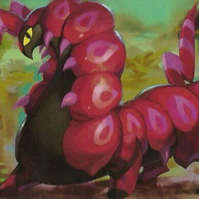
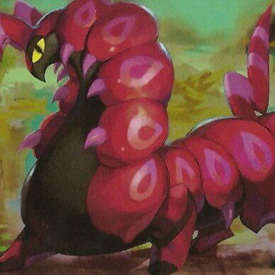
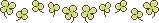

my little guys
Remmington aka Remmy
Furret is my favourite pokemon, though for a long time, I never felt like I had a favourite! Until I caught Remmington and he and a team of normal types carried me through the elite four in SoulSilver. I was so, so sad when there was no sentret or furret in Sword/Shield, and am still on the hunt for one in Brilliant Diamond so Remmy's legacy will live on. He is truly my best boy.
Loam aka Hotdog
I've always loved quagsires. I've had a plush one since I was a kid when quagsire was new! But I'd never had one on a team until I played through Sword. My little dude was a KILLER and carried me through the Championship and all of the DLC. He is now living a cushy retirement as I catch and train lots of other pokemon for funsies but still enjoys extended camping trips in the wild area and mountainous plates of curry.
Hozier
No, I didn't keep Hozier as a wooloo forever, but think of this like me showing you baby photos like a very proud parent, okay?
Like the rest of the internet, I too fell in love with this goofy rolly sheep and caught one asap when I was playing Sword. I got lucky with fluffy as his ability, and much like Loam, he's currently enjoying retirement after the Championship and taking lots of naps as close to a fireplace as possible without actually catching fire.
Cheddar & Gouda
Look at these boys. The cheesiest of boys. Did I mean to go through Brilliant Diamond with two bidoofs, now bibarels? No. Am I doing it because I caught both of these guys while trying to decide which ability would be better for my team and got attached to both of them? Yes.
Real talk though, simple ability and defense curl and rollout has been a killer combination so far.
Sebastian aka Sebby
I played the crap out of Diamond when it originally came out, and always always always caught a kricketot and a lopunny. With the release of Brilliant Diamond, Sebastian has made his valliant return to my roster. Still a lil miffed that lopunny is still a mono-normal type, but he still packs a punch. (or a kick when hi-jump kick manages to actually land.)
Tallie
The surprise star of Paldea! She is my LORGE GIRL and will take every hit and dish it right back to her opponents without a sweat. She single handedly took out multiple bosses including elite four members, and she deserves all of the sandwiches for her fortitude. I am still working through the Indigo Disk DLC and am trying to diversify a bit, but she will always have a spot on the team.
some other lil guys i like
 



